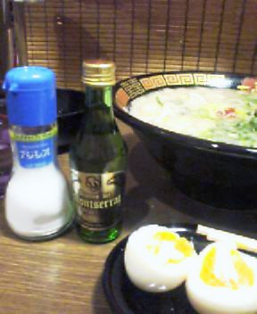

〜〜過去の雑記〜〜
18）05/07/19〜05/12/05分
17）05/04/04〜05/07/06分
16）04/12/17〜05/03/08分
15）03/08/25〜04/12/12分
14）03/03/13〜03/07/20分
13）03/01/20〜03/03/12分
12）02/09/30〜03/01/02分
11）02/07/08〜02/09/29分
10）02/01/07〜02/07/08分
９）01/08/30〜01/10/30分
８）01/06/20〜01/08/25分
７）01/05/09〜01/06/12分
６）01/03/02〜01/05/03分
５）01/02/06〜01/03/01分
４）00/12/30〜01/02/05分
３）00/12/22〜00/12/29分
２）00/12/14〜00/12/21分
１）00/11/24〜00/12/13分
（雑記の内容については、あくまでもフィクションであると捉えてください。実際の団体・個人等とは無関係です）

06/02/17
麻雀時における高度でない会話
凸「リーチ！！」
ワニ「げ……」
凸「ほれほれ 振り込め」
ワニ「うわ安全牌ないよ……」
凸「どうした？」
ワニ「う……」
凸「はい、それアタリ。残念やったね。雑魚が」
ワニ「うぅ……」
ワニ「今度はこっちがリーチ！！」
凸「待って。互いに日ソ不可侵条約を結ばないか？」
ワニ「どっちがソだよ……」
凸「話せばわかる……そうだろう？ 兄弟。」
ワニ「その韓国風がうざいね。ほらアタリ」
凸「ギャー」
凸「リーチぃ！」
ワニ「意地でもアガらせない」
凸「まあがんばれよ」
ワニ「ふぅ、これで安全」
凸「がんばっとるね。」
ワニ「うう……これなら大丈夫か？」
凸「はい残念、アガリ」
ワニ「わが努力、いたづらになりにける」
凸「なんで一句詠むねん……」
ワニ「ご無礼。リーチ」
凸「うぜぇ……このデブが」
ワニ「何か言ったかい？」
凸「70キログラムの分銅と一緒にうわざらてんびんに乗せるぞお前」
ワニ「ふんどうを手でさわるな！！！」
凸「いや何切れてんねん……」
ワニ「さわるな！！！！！」
凸「ほらほら、リーチ」
ワニ「円周率はおよそ３、円周率以外はおよそ５にしないか？」
凸「世の中のだいたいのもんは５かよ！ お前追い詰められてどこまで愚劣な提案してんねん！」
06/02/04
だから消えろよSleepボタン。
ＰＣのキーボードについている「Sleepボタン」や「Powerボタン」の鬱陶しさについて以前にも日記で述べた。
別のボタンを押そうとしたときや、キーボードを手前にずらそうとした時など、ふと操作中に触れてしまうと、どんな作業も中断され、ＰＣが停止させられてしまう。
麻雀中なら強制切断である。
しかもこのボタン、そう簡単には無効にできない。
（これくらい本格的な作業を行えば無効にできるそうだ→http://support.microsoft.com/kb/302092/ja）
この実に不愉快なワナ、私はけっこうしょっちゅうひっかかる。
月に２回程度は「Powerボタン」に触ってしまい強制終了させれらてしまうのである。
昔、まだWindows3.1や95の頃は、Windowsが「フリーズ」することがよくあったものだが、近年、それが改善されたかわりにこんな変なボタンがついたため、結局は「作業強制終了→再起動」をさせられる頻度が昔と変わらない。
ていうかこの機能なくせ、Windows。
この機能のないWindowsが普通のWindowsより1000円高くても、喜んで高い方買うわ！
というわけで本日も引っかかった。
麻雀中、これを上がればトップ……という局面でやってしまった。
ポチッ。
「ググッ」という低いドライブ音を出しながら一目散にシャットダウンしはじめるWindows。
凸「あ！ Powerボタンに手が当たってしまった、ううう、あああそのウインドウ閉じないで！ 待って！ 閉じるのやめて〜〜ヒイィィッ」
くっ……。
再起動して帰ってくると、３位に転落していた。
麻雀で失敗したので、ホームページを更新していた。
凸「ふむ、こんな感じかなぁ」
ポチッ。
「ググッ」
凸「げげ、まただ！ ちょおっと待って！ 今回は！ 今回だけは許して！！ 何が欲しい？ 言ってみ。怒らないから！！ そういえば最近キーボード掃除とかしてなくてごめんな？ おれが悪かったと思う。明日掃除するから。ちょっとまじでちょ！！！！」
ぐっ……この祈り、無視かよ。
再起動して帰ってくると、途中まで更新していた分が消えていた。
凸「うううむ、今日はついてない。しょうがない、もう一度やり直しだなぁ」
しばらく作業を続ける。
ポチッ。
「ググッ」
凸「……。」
凸「……。」
凸「キィィィィイイイィィィィイイイイイェエエエエエエエエエエ！！！！（お腹の底から） おいお前ぇぇ！！
もう許さん絶対ゆるさん何２回電源オフにしても俺が切れなかったからって調子のっとんねん２度あることは３度あるとかクソむかつく考え持っとんちゃうんかこんだけ何度も再起動されたら人の１人や２人くらい殺しても当然だろうがアメリカやったら銃やで、銃。ナイフちゃうよ。確実に殺すよ。しかもロシアンルーレットなお前と俺どっちが死ぬか賭けたろうやないか半々の勝負やからな別におれが不利というわけでもないんやぞいつでもやったるで勝負する勇気もないくせに何度も再起動してんなよハゲが。
もうええわ、シャットダウンするならしやがれ。もうお前に待ってとかいわねーよ。
一生キーボード掃除もしてやらねぇ。死ね。わざとポンジュース100デシリットルほどこぼしたろか？ 君壊れるよ？ 壊れてしまうよ？
どうせ凸にはボタンを無効にする方法がわからないとかタカくくっとんちゃうんかこの天才が本気になったらお前無効にするくらい一瞬なんじゃ。
ここまでひどい仕打ちをしといて何「ようこそ画面」とか表示しとんねん。
お前が不適切な機能で追い出しておいて、必死でもどってきたら「ようこそ♪」かよ。
おめでたすぎる。社会で通用せんわてめぇは。
そこに直れ、直れぇぇぇ！！！！！！！」
大学で情報科学を学んでいた凸は、これらのボタンを手軽に無効にする科学的な方法を一瞬で編み出した。
その方法、原始的な物理破壊。
もっと昔からやっときゃよかった……( ´Д`)
06/01/29
バームクーヘンだとっ！？
ピンポーン。ピンポーン。
せっかくの休日に何ですかね。
男「あのう……お宅のアパートの隣の家の者ですが。今度家を取り壊しますので、ご挨拶にまいりました」
凸「そうなんですかぁ。いやいやお気遣いいただかなくてけっこうですよ〜どうも〜。わざわざありがとうございますー。では〜」
男「いやぁ工事の時にはご迷惑おかけしますがよろしくお願いいたします」
凸「ああどうもどうも、では〜」
男「で、ちょっとしたモノをお持ちしたんですけど」
凸「あ〜……ちょっと今出られませんので、いやけっこうですよ。では〜」
男「え〜と、どうしましょうかね」
とりあえず帰れ！ 空気よめ！
幾度となく「では〜」言うとるやないか！！
男「つまらないものですが」
凸「いえ、ちょっと出られませんし、お気持ちだけで本当にけっこうですよ」
男「では……ここに置いておきますね」
勝手に判断するな！！！！
で、あとで取りにいってみたら、バームクーヘンが２つも置いてあった。
ＩＱ75〜80の間かお前。
バームクーヘンを２つゲットして喜ぶやつがどこにおる！？
バームクーヘンと千円札、とかにしとけや！
そしたら円満にことが進むねや！！
ていうか、甘いのキライなんですけど。死んでね。
とはいいつつも、まあそのまま捨てるというのも何なので、しょうがなくむりやり１つ（丸ごと）食べた。
普通にまず・・・( ´Д`)
（うわ、これもう一つ食いたくねぇ……どうしよう……）
ん？
いや、だが待てよ……！？
バームクーヘンを食べる、これは本当に正しいのであろうか？
それは我々の思い込みに過ぎないのではなかろうか？
そうだ、そうに違いない。
これは食うべきではない。
バームクーヘンの真の使い方、みつけてやるぜ！！
まずはそれとなく床に設置する。
しかし何事も起きる気配はない。
どうやら使い方が違うようだ。
ドアノブ上に配置。
けっこう安定している。
ということは……かなりバームクーヘン本来の使い方に近づいたと言えるだろう。
なんとなく異様だが、思ったよりフィットしている。
バームクーヘンも満足だろう。
バームクーヘン等における、トイレのオブジェとしての利用。
便座の丸さとの華麗なる調和から考えて、バームクーヘンの真の価値が発揮されている感じだ。
コンロで火をつける。
ここに至り、バームクーヘンは真価を発揮したといえる。
この美しい炎、バームクーヘンでなければ出ないであろう。
明らかにこのバームクーヘンは、この瞬間のために生まれてきたのである。
あっ！！
バームクーヘン焦げちゃった！！
あらぁ、これじゃ食べれないわぁ……
いやしかし、まさか焦げちゃうとはね！
これは……もったいないけど、捨てるしかないなぁ！
俺が悪いんじゃないよ★
というわけで、残念ながらバームクーヘンは捨てる他なくなってしまった。
（余力があれば斜線部の面積を求めよ）
なお、この取材中に、バームクーヘンが意思を持っていることが確認されたのでご覧いただきたい。
※音声も入っているので、音が聞こえる状態でみるべし。
自らの意思で動くバームクーヘン（動画）
06/01/22
処理時間
おいマイクロソフト。それは本気か。
06/01/21
一蘭においては
ラーメン屋にいってきた。
「一蘭」。ここは非常においしい。
本場九州のとんこつベーススープで……という解説はしかるべきところにまかせる。
珍しいのは、席に座ると、調理場との間にも、また両隣の席との間にも、それぞれ「しきい」があって、周りの人の姿形が全く見えず、ほとんど個室のような状態で食べるシステムであるという点だ。
（この写真はネットで拾ったものです）
「味濃い目、あっさり、ネギは青と白両方で４倍をダブル、辛さとニンニク普通、たまご」……もう50回近くは注文したであろう内容を今日も注文である。
ところが、今日の私はいつもと違った。
くつ下の右と左をほぼ同じ色でそろえるというオシャレを達成したので、モテモテ男の気分になっているのである。
「ふっ……私ほどともなれば、ラーメンを食べるときにも優雅に、だ」

そう、普段から持ち歩いているアジシオのみならず、気の利いた食前酒（アパタイザー）をテーブルに置いたのである。
婦女子たちは、次のような会話をするであろう。
「きゃあ、見て！ あの人！！ ラーメンを食べるときにも食前酒よ！！」
「高貴だわ！ フランス人なのかしら！？」
「それに見てあの塩……彼には、好みの味に対する妥協はないのね」
「素敵！！」
うわ！
よく考えたらこのラーメン屋、個室だから見えないよ！！
おれこんなことしてる場合じゃないよ！！
つい現実に引き戻され、いそいそと食前酒を飲み干し、ラーメンに向かう。
ふう、うまいうまい。
ところがである。
おかしい。
何か、先ほどから違和感を感じていたのだが、いつも入っているはずのチャーシューが、まだ見当たらないのである。
普通チャーシューは上に乗っているはずだ。
「まあネギが大量にあるため、どこかに隠れておるのじゃろう、ういやつじゃ」とたかをくくっていたのだが、けっこう食ってもまだ出てこない。
ま、まさかチャーシュー入ってない！？ 入れ忘れた！？
そこでまずは、ドラゴンボール風にチャーシューを呼び出す作戦にでる。
凸「いでよ、チャーシュー！！」
……。
……浮かびあがってこない。
どういうことだよ。
これでだいたいのものは浮かび上がってくるって、小学校のとき中村が言うとったよ。おれ、20年もだまされてたのか！？
これがダメなら、では、どんな誘い文句を言えばチャーシューが浮かびあがってくるのか、私という天才の頭脳はそのことだけに集中した。
例えば、犬を呼び出すときを考えてみよう。
もっとも良いのは、口笛を吹いて犬の気を引くことのはずである。
そこで口笛を吹いてみた。
凸「ヒュイ♪」
凸「ヒュイヒュイ♪」
……。
ぐっ……無反応かよ。
かたくななやつだ。
誘い出そうとしてもダメだ、ここはアメとムチの戦法でいこう。やさしい感じで語りかけてみる。
凸「チャーシューよ。出てきなさい。今出てきたら先生怒らないから。」
……。
……出ろよハゲが。
おい、隣に座ってるデブ、何ちょっとブツブツ言ってる俺の方みて笑ってんだよ。
もういい、わかった。
チャーシューが出てくるまで、ただただ麺を食い、スープを飲み続けるしかない。持久戦というわけだな。
完食(ﾉ´▽`)ﾉ
……っておい！！！
チャーシュー入ってへんやんけ！！
どないなっとる！！！！
何「この一滴が最高の喜びです」とか「終わりの言葉」述べ始めてしまっとんねん。
麻雀のとき、オーラスで親が上がってまだ続行なのに「おつ」とか言ってるアホかお前は！
こっちは何ら最高ちゃうわ！！
チャーシューはいったあらへんねん！
人の気持ちのわからん店やな！！
しかしスープも飲みきった今になって、店員を呼んで、
「あの……チャーシュー入ってないんですけど」
などと言っても、信じてもらえるはずがない。
「（お前何全部食いきってしまってから言ってんねん。明らかにチャーシューはかつて存在し、なおかつお前が食ったやろ）」
とか思われ、哀れみの目で見られつつ、
「失礼いたしました」
とかいって、空の容器にペラっと１枚のチャーシューを入れられるに決まっている。
凸「ふっ……今日は、許してやるよ（キラリ）」
かっこよすぎるセリフを残し、凸はラーメン屋を後にした。
06/01/20
くつ下
私は、夜更かしして色々やっていることが多い。
そこでギリギリまで睡眠時間を確保するため、朝８：１５に目を覚まして、８：２５に家を出る毎日である。
もっともシビアなのが「くつ下の選択」である。
洗濯してバラバラに干したままの状態から、一瞬のうちに右と左のくつ下を選び取らなければならない。
この作業においては、
「今日はどのくつ下がいいかな〜♪ この靴に合うのは……これかな♪」
などという悠長な判断はしていられない。
「これとこれが同じだ！」
という判断さえない。
「似てる」
これである。これのみである。
なんとなく色が近い、ということのみが全てなのだ。
今日もそんな感じでくつ下を選んで電車に飛び乗った。
ふう、と落ち着いて足元に目をやる。
うわけっこう違うわこれ……無茶や。近似できへんわ。
紺と黒、というよりは、もう思いっきりブルーとブラックやん。
「あの人をみて。右と左のくつ下の色において、明白な差があるわね」
「ええ。確かにそれらは異なっているわ。彼の身に着けている右のくつ下は、左のくつ下よりかなり黒いもの」
みんなこんなヒソヒソ話で、ダサさを明確化して楽しんでいるのだろうか。屈辱……。
今日一日、会社でなんとかばれないようにせねばなるまい。
あらかじめ色々な状況を想定しておく必要がある。
まずは通常の歩行。これは比較的安全だ。もともとくつ下などかすかにしか見えない上、ちょっと意識して腰を落とせばばれないであろう。
さすが天才。
次に、事務机に座っているとき。これもさほど危険はないだろう。
普段なら、つい足を曲げたりしてしまうところだが、常に異様なまでに伸ばしておくことで、暗闇の中に隠れてばれない。
あぶないのはプリンターなどに向かうために机を立つときだな。
周囲に目をやり、皆が私の足以外の何かに集中しているスキをついて、ばっ！と立ち上がり、０．５秒以内に腰を低くすべきである。
ふぅ、今日一日、なんとかやっていけそうだぜ……
凸「おはよーございまー」
係長「東北氏、くつ下の色違うよ」
無限にはやいわ！！！
06/01/16
Ｏ氏等の挙動
先週の金曜の夜、ふと席の隣に立つ男が一人。
そう、彼は職場の同僚、Ｏ氏である。
Ｏ氏「凸さん」
凸「おいあいかわらず声ちっちゃいな」
Ｏ氏「そうですか……」
凸「声野太いねん」
Ｏ氏「スシでもいきませんか」
凸「誰と」
Ｏ氏「２人ですけど」
凸「今から？」
Ｏ氏「ええ」
凸「金曜の夜に突然思いついた提案が『声が野太い男と２人で今からスシを食いに行きませんか』かよ！！ どんだけ構想力・発想力低いの！！！」
Ｏ氏「いいじゃないっすかぁ。たまには」
凸「うまいの？ そのスシ」
Ｏ氏「うまいっす。１カン１００円っすよ」
凸「やっす！！！ おれが小学校の頃の遠足のおやつにさえ２カンもっていける額や！」
Ｏ氏「時代古いっすね」
凸「うるさい！ 子供が『おやつにスシ２つ買うてもうたワァ、失敗したぁ』いうて泣き出したらお前どうするつもりや」
Ｏ氏「自己責任っすよ」
凸「しかも両方ともしそ巻きな。そら子も泣くわ」
Ｏ氏「甘やかしたらいけないっす」
凸「あいかわらず鈍器のようなつっこみやなお前……」
Ｏ氏「ほんとにおいしいんですって。トロとかも分厚いっすよ」
凸「お前の分厚いが一番信用できへんのじゃ！！！」
Ｏ氏「なんでですか！」
凸「こないだ、死ぬほどペラペラの牛タンを『分厚いっす』言うとったがな！ お前、立体把握能力低いねん！ 円すいの体積とか求めるの不得意なタイプやん！」
Ｏ氏「……」
凸「それやったら飲み会にしようぜ。まって。誰か誘う」
まずはＡＫＯから。
凸「うーす、今日のみにいかない？」
ＡＫＯ「今日は先約が〜〜ごめんね」
うっ……
んじゃ、美人のＳさんでも。
凸「飲みにいこ〜〜ぅ」
Ｓ「行く意味がない」
痛……！ 心、痛……。
凸「（ＳＡＹＡはどうかな）」
（ピポパ・・・）
凸「（いや、こいつ確か職場かなり遠かったはず……無理やな）」
（ワンコールもしないまま切断）
20秒後。
ＳＡＹＡよりメール。
「おひさ〜！！！！ さっき電話くれた！？」
お前テンション上げすぎ上げすぎ。
０．２コールくらいでなんでそんなに食いついてんの！
凸「いや、急に友達と飲みにいくことになったから、こんかなと思ってね」
ＳＡＹＡ「いく。何時にどこ？」
凸「こっち２人おるから、もう一人誰か連れておいでな」
ＳＡＹＡ「いや私一人だから、一人で向かうから！ とりあえず霞が関いく！ じゃああとで！」
飢えた動物か。飢えし動物か。
一人でどんだけヒマやってん。
結局あと一人は職場の同期の子を誘って飲み屋へ。
ＳＡＹＡ「ゴホゴホ、そう、それでね、ゲホッゲホゲホ！」
凸「大丈夫かよ……」
ＳＡＹＡ「だ……ゲッハゴハゲハ！」
凸「一言も言えてへんやんけ……」
ＳＡＹＡ「……。……」
凸「まあ、おちついてホレ。むりせんでええで」
ＳＡＹＡ「……。……」
凸「落ち着いたかな」
ＳＡＹＡ「……ゴッホ！ ゲヒギャバァァ！」
凸「（ギャバァなっとるがな！ こわいねん！！ 帰ってゆっくり寝ろ！！）」
なぜここまでひどい風邪を引いているのに来る……
06/01/02
2006年こそは
ＡＫＯという子がいる。かなり昔の日記で書いた子だが。
去る１２月２４日、クリスマスイブかつ誕生日ということで、Ｓさんにお祝いのメールを送ってみたものの、ごく自然な感じで無視されたので、そういった１年を忘れるためにＡＫＯを含む４人で忘年会にいってきた。
焼肉食い放題だそうである。
ＡＫＯ「ここの牛タンっておいしくない？」
一同「まぁ、ね」
凸「（いやぁ、まあ別に普通においしいが……普通ですよね）」
パクパク ムシャムシャ。
ＡＫＯ「牛タンおいしいよねぇ」
モグモグ。
ＡＫＯ「ほんと、牛タンおいしいよ？」
凸「ようわかった！ お前はここの牛タンが猛烈に好きやわ！ なんでそない必死に賛同求めるねん！！(笑)」
ＡＫＯ「も〜う、凸さんったら〜（ウインク）」
凸「うっ……」
この女、かわいいことを武器にするタイプの子なのである。
Ｏ氏「うまいっす……」
凸「ん？ 声ちっちゃ！」
Ｏ氏「た、確かにうまいっす！」
凸「え……いや反応遅いなお前……どもるほどのことか」
Ｏ氏「うまいっすよ！！」
凸「うるさい。網と共にお前を取り替えてもらうぞ。」
ＡＫＯ「ね？ 牛タンおいしいよね？」
凸「ふむぅ、まあまあやね」
ＡＫＯ「それにここの牛タン、分厚くない？」
Ｏ氏「そうですね……厚いっすよ！」
凸「いやこれ、むしろ薄いだろ（ていうか仙台の太助の牛タンの1/4以下やよ）」
Ｏ氏「そんなことないっすよ。焼肉で牛タンって、下手したらもっと薄いっすよ」
凸「それはただお前が今まで下手し続けてきただけちゃうんか！」
Ｏ氏「……」
凸「いや照れ笑いやめろ！！！ 自分の寂しい食生活を露呈しただけやないか！」
というわけでたらふく食って、さあどうしようかとなった。
ＡＫＯ「凸さん〜２人で遊びにいこう？ ね？（腕にからみつきながら）」
凸「あいつらどーすんのよ」
ＡＫＯ「ほっといていいから〜ぁ」
凸「ええんかよ」
ＡＫＯ「いいから早く〜いこ〜〜〜ね〜こっちこっち」
断っておく。
これは決して私がもてているのではない。
これは技なのだ。
とりあえずゲーセンへ。
ＡＫＯ「リラックマだ〜〜欲しい〜〜〜」
凸「私なら一瞬で取れるね。取れる速さは学歴に比例する。中央大クラス以上なら一発で取れる」
ＡＫＯ「凸さん素敵！！」
（１回目、ミス）
ＡＫＯ「凸さんって明治大？」
凸「ちょ……待って」
（２回目、ミス）
ＡＫＯ「日大」
凸「わ、わざと」
（３回目、ミス）
ＡＫＯ「室蘭工業大ですな」
凸「うるさいわ！ そしてお前無駄に詳しいよ！！」
（４回目、成功）
ＡＫＯ「凸さんさすが！ 室蘭産業大！」
凸「大学の名前かわっとるがな。はい、あげる」
ＡＫＯ「え〜〜〜もらっていいの！？」
凸「俺が持って帰って何に使うねん」
ＡＫＯ「うれしいい〜ほんとぅ？ ほんとにいいの？（上目遣いで）」
凸「ぐっ……！！」
いちいち攻撃する子である。
明らかにだましテクなのだが、私はそういうのに弱い←
ＡＫＯ「ちょっとトイレいってくるね」
凸「んじゃゲームみてるから」
ＡＫＯが戻ってきた。
凸「あれ？ さっきの例のアレは？」
ＡＫＯ「え？」
凸「さっきとったやつ」
ＡＫＯ「ん？」
凸「その……リラックマ！！！！ 発音さすな恥ずかしい！」
ＡＫＯ「あれ！？ ない！？」
プレゼントをこんなにもすばやくなくした女性は初めてである。
お前、さっきの喜びは確実に嘘だろ！！
凸「お前さっきあげて、ちょっと回ってトイレいっただけやん！！！」
ＡＫＯ「トイレにもないの〜〜」
凸「どこに流してきたんや！！！」
ＡＫＯ「ごめんねぇ？ ほんとごめんね？（抱きつきながら）」
凸「もう一個とるわ（弱！ おれ弱！ 最大限のやさしさ！）」
ＡＫＯ「え……」
凸「あれ？」
ＡＫＯ「……いいから次いこう」
凸「（しになされ！ やっぱ別にいらんのかい！！）」
そしてビリヤードへ。
凸「おれ全然うまないよ」
ＡＫＯ「あたしも〜〜」
凸「（ほなお前、なんでビリヤード誘ってん……）」
ＡＫＯ「ルールは？」
凸「ん〜と、下手同士やとなかなか入らずに運のみになるからさ、１つ入ったら１点とかでいいんちゃうの」
ＡＫＯ「……ダメ」
凸「（なんなんよこの女は！ 何が不満かね。どのような改善を求めるのかね）」
ＡＫＯ「本格的なルールじゃなきゃ嫌！」
凸「んじゃ、普通のナインボールにするか」
ＡＫＯ「ナインボールって何('-')」
凸「うわぁ、お前すごいダメだぁ……。なんか今年東大受けたいけどセンター試験って何、いうてる偏差値50の子みたいな感じだぁ」
ＡＫＯ「ね、教えてよぅ♪（クネクネ）」
凸「クネクネすんなああああああああああァァァ！！！」
こうして、なんだかんだで押し切られる徹夜の１日がすぎていった。
むろん眠くなって行った漫画喫茶においては、私の席をも独占して一人でグースカ寝ていた。
私はほぼ半立ち状態で朝までカイジを読み続けるはめに。
なぜ私の周りにはこのような女性しかいないのでしょうか。
※写真は、街中にあった銅像にキスすることを提案したところ、「それ、ええ案やな！」くらいの勢いで快諾され、彼女が実施しているもよう。
お前何になりたいねん……
06/01/01
老化
先日、また叙々苑（焼肉屋）にいってきた。
この日記で何度か登場している大学時代の友達、ワニと。
ワニといると、つい各種ギャグを言いまくらなければならない、という強迫観念に襲われる。
凸「とりあえずカール」
店員「えっ……ビールですか？」
凸「よくぞ見抜いたなおぬし……そうです」
ワニ「ところでお前さ」
凸「なにな」
ワニ「ギャグセンス落ちたな」
うわぁ！
凸「ちが……無理にひねりだしたからやな」
ワニ「とかいってお前、実はそのギャグ程度で、ちょっとおもろいとか思いつつ言ってしまってるやろ。昔のお前はそうではなかった。その言葉を言うことが自虐的でおもろい、とかじゃなく、ネタの内容がおもろかった。ところが最近の君はどうだ」
凸「鋭すぎる……」
落ち込みつつもネギ塩ロースを３つほど食い、満足しきって会計へ。
ワニ「何万円札出せばいい？」
凸「明らかに１万円札や。２万円札とか５万円札とかあれへんやろが。シブ柿食わすぞ」
ワニ「森首相が嬉しがって出しとったやん。２万円札」
凸「それは２千円札や。確かに２千円札流通してへん。発行無意味やったけど、そこは覚えといてあげようや」
ワニ「いやぁ、あまりにも無駄すぎて、千か万かわからんようになってね」
凸「実は、ある……」
ワニ「は？」
凸「実はあるんよ」
ワニ「なにが」
凸「２万円札」
ワニ「狂ったか。ていうか、あるかないかよりさ、すかしの絵柄の方が気になるわ。すかし何なん」
凸「なし」
ワニ「ないんかよ！ 偽造たやす！！！」
凸「ほんなら、何の絵柄やねん」
ワニ「女」
凸「性別のみ言うな！ 今お前、自分の漠然とした欲望垂れ流しただけやないか！」
ワニ「金日成」
凸「いやあかんあかん！ 日本政府そんなんしたらあかん！」
ワニ「ブス女」
凸「もっとあかん！ 日本政府そんなんあかん！！！！」
ワニ「ゆず」
凸「落ち目や！！ 20年後にはそのへんのオッサンと一緒や！！」
ワニ「わらび〜〜〜もち♪ つめた〜くて〜〜」
凸「なんで歌いだすねん！！」
ワニ「おいし〜いよ♪ さおだけ〜さおだけ〜〜い〜しや〜きいも〜♪」
凸「何屋さんやねん！！ ……お前……ギャグセンス落ちたな」
ワニ「お互い老いたな」
05/12/29 （必ず、１つ前の日記を先にお読みください）
ウノ・ドス・トレス２
ある蒸し暑い夏の日の午後の教室。
先人たちの知恵を大切にしながら生きていく他に道のない矮小な種類の人間たちに一瞥をくれて、途方もなく長い一日を半ば呪うかのように煙草の煙を吐き出しながら、何を見るでもなく窓の外に目をやるウーゴがいた。
うわ、ださ！
ウーゴ何やっててもださ！！
くっ……たそがれるにはあまりにも自分のスペイン語名がかっこわるすぎる！
ウーゴの重み、でかいぜ……。
スペイン語の授業においては、お互いにスペイン人になりきり、
竹下「オラ、ウーゴ！（やあ、ウーゴ）」
とつ「オラ、アントニオ（やあ、アントニオ）」
竹下「ケタール？（元気かい？）」
とつ「ムイ、ビエーン、グラシアス！ イトゥ？（とても元気さ、ありがとう！ あなたは？）」
のように会話の練習を強いられる。
不自然のきわみかよ。日常会話として完全に破たんしているだろうがハゲが。
ていうか竹下くんさぁ。
「オラ、ウーゴ」ってさ。
違うんだよね。
本当にウーゴなのは竹下くんではなく私なのにさ←
ウーゴの重みが何一つわかってないぜてめぇは。
ドラゴンボールで「オラごくう！」というセリフを聞くたびに「オラ。ケタール？」と心の中で反応してしまうようになった自分を哀れに思いながらも、ウーゴとしての人生をまっとうしようと心に誓う。
さて、友達のワニは「ラモン（Ｒａｍｏｎ）」という名前なのだが、スペイン語において「Ｒａ」は巻き舌で「ルラァ」っていう感じで発音せねばならない。
とつ「オラ、ラモーン」
先生「ラはもっと巻き舌にしてください」
とつ「（うわうぜぇ……）」
先生「ちゃんとして。」
とつ「オラ、ルルルラァモーーーン！」
先生「やりすぎです」
周囲（どっ）
とつ「（くそう！ くそう！ なぜ笑われねばならんのだ！）」
周囲「はい、もう一度」
とつ「オルラァ、ルラァモーン」
しまったぁぁ！！！
「オラ」の方は「Ｈｏｌａ」で「ｌａ」だから巻き舌にする必要ないよ！！
超恥ずかしいよ！！！
先生「Ｈｏｌａは「ｌａ」だから巻き舌にする必要はありません」
周囲（どっ）
わかっとるわい！
今それと同じこと、心の中でおもっとったわい！
説明もピッタリ一致したよ……まじで。
おい周囲！ そんな目で見るな……嘘ちゃうよ！
今ちょうどやろうとしてたとこ！！！（涙）
こうした「会話」や「スペイン語の歌」を授業で繰り返しさせられ、筆記テストのほかに、これを先生の前でビデオに撮られつつ披露し、それが採点されて成績がつくという方式だった←
ビデオの前にて。
とつ「ウーン、ドース、トレース♪（１・２・３♪）」
（かなり吹っ切れてきたらしい）
これはマリアという女性に対する恋の歌なのだが、恋の歌のサビにおいて「１・２・３♪」と朗らかに歌いあげてしまうスペイン語圏の人々の頭の悪……奥ゆかしさには驚かされる。
何がうれしくて君は１、２、３と言うのか。
マリアがそれで喜ぶと思っているのか。
それでいいのかマリアよ。
などと思いながらも、私がスイスに旅行に出かけたとき、街中でどこからともなく、
「ウーン、ドース、トレース♪」
という歌声が聞こえてきたときには舞い上がってしまった。
とつ「（うわ、この歌知ってる！ 知ってるよ！ こんな外国で、知ってる歌に出会ったよ！！）」
こうした偶然に遭遇したとき、人はしばしばその偶然を周囲に知らせたくなってしまうものである。
私は、その歌を知っているということを、それとなくアピールしたくなり、小さな声で「トレース♪」と口を合わせながら、歌のリズムに乗ってみた。
浅はかであった←
スイスの街中において、最近スペインで流行している歌にあわせて一人、薄笑いを浮かべながら「３♪」と口ずさむ、どこの馬の骨ともわからぬ東洋人――現地の人々の目には、さも不気味に映ったことだろう。まさか彼が自らを「ウーゴ」と名乗るタイプの人間であるとは、想像だにできまい。
ちなみに、この話をネット上の女性の知り合いにした後しばらく、彼女は私のことを「ウーゴ」と呼んでいた。
マジ切れしそうだった( ≧∇≦)ﾌﾞﾊﾊﾊ!
どうやら「ウーゴ」としての体験は、私の中で恐怖の体験として今でも息づいているようである（完）。
05/12/28
ウノ・ドス・トレス
大学の頃、第二外国語として履修していたのはスペイン語であった。
この授業、かなり変であった。
最初の授業において。
先生「では、みなさんの名前を決めてください」
いやおかしいおかしい。最初からおれの名前はきまっとる。
凸や。東北や。それ以外の何でもないわ。
私は、
「ワイは凸や。プロ東北、凸や！！」
と心の中で叫びながら、先生の真意を汲み取ろうとしていた。
先生「名前を、この表から順番に選んでください」
嫌です。なぜなら、先生、あなたのやり方が嫌いです。
配られた表を見ると、
・Alberto（アルベルト）
・Antonio（アントニオ）
・Carlos（カルロス）
・Roberto（ロベルト）
・Victor（ビクトル）
といった風に、スペイン語の人名が並んでいた。
なるほど。
スペイン語の名前を自分で選べと。
そして今日１日、その名前を使って授業をするというわけだな。
馬鹿馬鹿しいぜ……。
ところが周囲の人は、次々と手を挙げ、名前を選んでいく。
「竹下です。アントニオです」
ぎゃっはっは。
馬鹿だこいつ！！！
「竹下です。アントニオです」
って( ≧∇≦)ﾌﾞﾊﾊﾊ!
どっちやねん竹下、もしくはアントニオよ！！
周囲の学生が、この授業の「制度」に、いとも安易に組み入れられてゆくさまを、隣に座っている友達のワニと一緒に冷笑しながら見届けていた。
そうこうしているうちに、私とワニ以外は全員選び終わっていた。
先生「あと選んでいないの……東北くんとワニくん、選んでください」
凸「（プッ）……じゃあ、カルロス」
先生「それはもう取られてますね」
ワニ「え〜と、ロベルトで」
先生「それももうないですね」
凸・ワニ「え……どれが残ってますか？」
先生「Ramon（ラモン）と、Hugo（ウーゴ）です」
ワニ「ラモンがいいです！！」
凸（一瞬遅れて）「僕、ラモンで！！」
先生「では、ワニ君がラモン、東北くんはウーゴです」
おれ「ウーゴ」かよ！！！！！！
かっこわるいよ！！！！！
おいワニ！！！
お前、「スペイン語名」を自ら選ぶことの愚かさを、あんだけ笑っとったやないか！
なに目を輝かせて「ラモンがいいです！！」言うとんねん！！
お前は制度に負けてるよ！
ウーゴ回避のためとはいえ、情けないよ！！
「ラモンがいいです」だと！？ 冷静に考えろ。自分の名前「ラモン」て、なんも良くないわ！！！
周囲の学生「ウーゴだって」
周囲の学生「ウーゴって……（笑）」
周囲の学生「ウーゴ……」
ワニ「東北、ウーゴかよ（プッ）」
竹下「アントニオでよかった……彼ウーゴだから」
おい！
おれ笑われてる！
理不尽な笑われ方されてる！！！
今日１日、ずっと「ウーゴ」と呼ばれる他ないのか。
次回はロベルトとってやるぜ……
先生「では、みなさんはこれからの２年間、スペイン語の授業ではその名前で呼び合ってください」
いや今日だけちゃうんや。
っていうかこの先２年なんや。
エターナル・ウーゴなんや。
自殺してぇ……←
こうして私は２年間、常に「ウーゴ」であった。
05/12/24
クリスマス的な話題
読者諸氏におかれては、「凸はクリスマス関係の話題とは無縁の男ではないか」などと高をくくっていることであろう。
フッ。
今年のクリスマスは、話題バッチリである。
ハンゲームという、無料でネットゲームが楽しめる有名なサイトがある。
ゲームのロビー（待合室）では、参加者が自由に発言できるのだが、子供を含めて老若男女が参加するため、「死ね」だとか「レイプするぞ」だとか、不適切な発言は「禁止された用語」としてブロックされるようになっている。
こういうものを見れば、「どんな単語が禁止されているのか？」を追求したくなるのが理系の性である。
「死ね」「殺す」「精子」などはともかくとして、「妊娠」などまで禁止されているのは驚く。
必死で「禁止されているだろう言葉」を打ち込みまくり、「禁止されています」と表示されて落ち着く。
ところがである。
たまに、当然禁止されているはずの用語が、うまく禁止されていないときがある。
安心しきって「禁止用語探し」をしていると大パニックである。
うわぁ！
ロビーで思いっきり言っちゃってるよ！！！
これが私の29歳のクリスマスの思ひ出となる（今すぐ死んだ方がいい？ ねぇ！？ まじで教えて！！）。
05/12/22
オフ会の思い出
12/17に、ネット麻雀「東風荘」関係のオフ会に行ってきた。
30名くらいの規模で、でかい。
１次会は飲み会、２次会は朝まで麻雀だった。
麻雀の内容についてはあえて触れるまい。
神のごとき私が負けるはずがないのだから。
（事実を知っている者は全員殺しておいた）
さて、問題は２次会で行なった麻雀の清算の時に起きる。
「凸さん、計算得意でしょ。全員のスコア清算してよ」
どこからともなく出たこのような提案に、「麻雀理論研究家」である私はあっさり、
「いいよ」
と答えてしまったのであった。
一通り計算が終わる。
凸「計算おわったよ（おい！？ なぜか10000円以上足りない！？）」
皆「さすが凸さん！」
凸「まあな（どこだ……どこに計算ミスがあるんだ！？）」
皆「ピッタリだったんですね？」
凸「当然よ（落ち着くんだ凸、今なら引き返せる）」
皆「さすがですねぇ！」
うわあ！
10000円以上たりねぇよ！
プライドのせいで切り出せねぇよ！！！
結論だけ述べるとしよう。
私はここ４日間、チキンラーメンでしのいでいる←
05/12/19
ＭＳＮの会話より
凸：やあ
凸：むい
凸：もや！
凸：ヒマなんだよ 何か反応くれなさい
凸：ふっ！ ふっ！ ふっ！ （腹筋するだけで貴方も高収入！ 腹筋１回あたり１００円！ という広告にだまされながら）
Ａ子：ああ、君ね。
凸：何そのメッセのタイトル「ウイルス駆除のしかた教えてください(ﾉ_<｡)ｴｸﾞｴｸﾞ･･」って。
Ａ：かかったみたいなの
凸：残念。（取り急ぎ感想まで）
Ａ：なんか診断ツールで10個近くあることがわかったのよ〜
凸：そういう奴いたなぁ。270個感染ファイルが見つかった馬鹿もいたわ。
Ａ：270！
凸：トラでさえも彼の前では猫になる。さしずめお前はネズミと言ったところか。
Ａ：なんで初代スト２におけるブランカなの。
凸：その10個の名称をお教えいただければ対処法も提示できるかもしれませぬが。
Ａ：ウイルスの名前？ もうわかんない・・
凸：動かぬこと山のごとし、はしること風のごとし、記憶力タヌキのごとしか・・・
Ａ：記憶力のみ、ダメじゃない
凸：んで、どうすんの
Ａ：ウイルスバスター２０００６かったんだけど
凸：遥か未来だな
Ａ：ＣＰＵしょぼくてうごかなかった
凸：あふれ出し垂れ流さんばかりのダメさだね(笑)
Ａ：20006年か。。
凸：ものすごく馬鹿に見えた すまん。ところで、ウイルスは何でみつけたん？
Ａ：ウイルスバスターのサイトで
凸：ああ 無料検索ね
Ａ：そうそう
凸：大したことないウイルスなら 復旧できますぜ？ 私の力（太陽のごとき）を使えば。
Ａ：今日寝るとき、もう一回しとくわ。
凸：太陽無視なの！？ それでいいの！？ ねえ！
05/12/09
でんきもうふ
でんきもうふのすばらしさは筆舌に尽くしがたい。
でんきもうふは家にあるのだが、私は敢えて「今年用でんきもうふ」を購入してきた。
知り合いの情報によると、日立の「ねごこち」という電気毛布が良いらしい。なんか必死に宣伝していた。
知り合い「足元があったかくなる自動温度調節だし……」
あほか！
何年でんきもうふを使いこなしてきてると思ってるんだよ！
暖かくなるべき場所にちょうどの温度がいくように、角度や位置、次元をミリ単位で動かせるんだよこっちは！ そんな機能いらん！
知り合い「ダニ退治モードもあります」
笑わせる。
ダニ退治モードなど、10年前の電気毛布にも平気でついていた。
21世紀の電気毛布、もっと他に優れたモードはついてないのか？
どうせアレだろ、こんな機能しかついてないんだろ。
「ダニモード」
ダニが成長しやすい。
「犬退治モード」
犬程度なら一撃でほふることができる。
「閲覧モード」
電気毛布の暖かさをグラフ等で閲覧できる。
「焼肉」
焼肉に行く義務が生じる。
「ビデ」
秘部を洗浄。
なんでふとんの中で秘部を洗い続けなあかんねん！！！